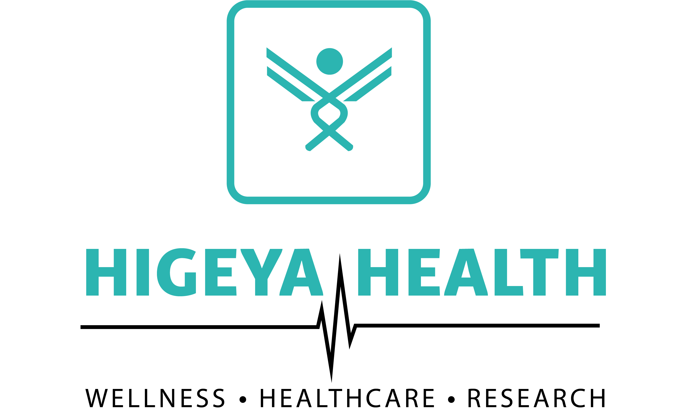
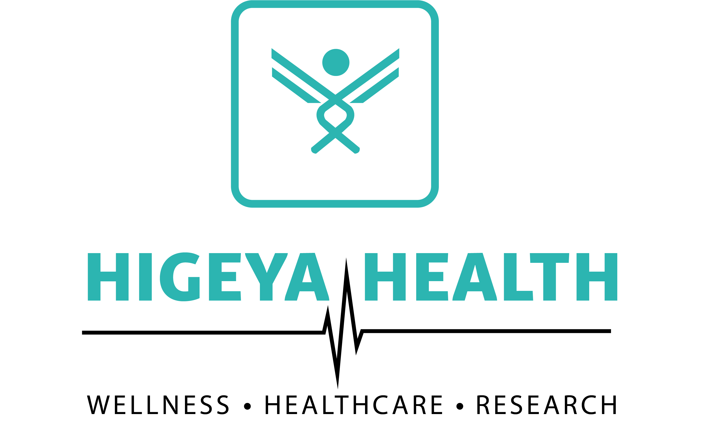

Higeya Health- Your Holistic Health Partner
Inspired by our mission to make healthcare advanced, accessible, and affordable, we have created two
high-potential verticals that operate together synergistically:
- Higeya Health Hospitals - Offering ethical, specialist-led medical diagnostics and care through
a ground-breaking remote diagnostics model.
- Higeya Health Studios - Changing the way you feel good, by using functional fitness, clean
nutrition, and mental resilience, without artificial shortcuts.
All these verticals build a holistic lifestyle health ecosystem, providing care, recovery, and daily
strength to all Indians.
Higeya Health Hospitals - Redefining Remote Diagnostics and Ethical Healthcare
The challenge that has continued to plague the healthcare system in India is that specialist care
and diagnostic imaging are still confined to urban agglomerations, with large parts of the
population in Tier-2/Tier-3 towns and rural India lacking the ability to access timely and accurate
diagnosis.
Higeya Health Hospitals are transforming that through integrating remote diagnostics in real-time
within the core of our care model.
Advanced Imaging. Remotely Operated. Centrally Interpreted.
The system of our hospitals employs an outstanding combination of the first-rate imaging
technologies, such as MRI, CT, X-Ray, EEG, ECG, and PET-CT, distributed across local diagnostic
centers connected to the central medical intelligence service by secure telehealth protocols.
That is to say:
- A small town patient can get telehealth MRI facilities within the town.
- The data on scans is sent in real-time to our central panel of radiologists and specialists.
- Reports are created and sent in hours, and the patient does not need to travel to the city.
- Video-based specialist reviews are combined with clinical consultations.
This hub-and-spoke system can enable us to expand access to medical care without diluting quality.
The Re-invented Remote Healthcare in India
Eliminating the necessity to travel a lot and spend hours waiting in line, we are not only making
diagnostics simpler and more comfortable, but also saving lives. The sooner, the better, and we are
here to make sure that no life is jeopardized because of the lack of access.
It matters not whether the patient is undergoing cardiac diagnostics via ECG, neurological
examination with the EEG, or cancer screening with CT — Higeya Health Hospitals guarantee
expert-level interpretation, every time.
Ethical, Affordable, and Equitable
- Cost-effective diagnostics – We employ the most cost-effective infrastructure and operational
efficiency to minimize the cost.
- Ethical and Transparent – No extra scans. No exaggerated suggestions. Just what is medically
pertinent.
- Fair – There should be equal and fair treatment of patients regardless of whether they are in
the cities or villages.
We collaborate with local clinics, local government programs, and community health workers to
integrate our services into the social fabric, increasing reach and trust.
Higeya Health Hospitals is not only about machines or scans, but it is all about restoring dignity
to healthcare in the places where it is most needed.
Higeya Health Studios – Wellness, Naturally Empowered
Health is not merely the lack of sickness; it is the embodiment of strength, locomotion, and
lucidity of mind. This is the reason why we established Higeya Health Studios – a health studio that
believes in the construction of holistic vitality that is devoid of manmade shortcuts.
We are going deep into an industry that is full of commercialized fitness, synthetic supplements,
and quick fixes that are superficial.
More Than a Gym – A Nature Fitness Temple
Higeya Studios is developed to be a comprehensive fitness studio that works with functional
movement, mental well-being, and body awareness in the long term.
We have the following programs:
- Strength Training – Bodyweight and resistance training
- HIIT & Tabata – Cardiovascular and metabolic health
- CrossFit & Calisthenics Inspired Flows – Increased mobility and coordination
- Endurance Training and Cardio Circuits – To improve the heart and stamina
- Yoga & Meditation – Concentrating on the mind and improving the breath-body relationship
We will also introduce Pilates-based sessions shortly to enhance core strength and posture.
This all-encompassing programming fits perfectly in the lives of professionals, homemakers, seniors,
and young adults in India who want strength training and flexibility in their lives to make their
lives functional, not pretty.
Natural Gym Nourishment: No Powders, Simply Produce
- Protein and potassium: bananas and boiled eggs
- Gut-healthy ragi smoothies and slow-burning energy
- Vegetables that are sautéed along with native spices as something recuperative
- Natural refill of sugar through fruit bowls and dry fruits
- Hydration with sugarcane juice, tender coconut, and jeera buttermilk
Such philosophy transforms Higeya Studios into the most natural gym nutrition centre in India and
thus, way-to-go to every person who is exhausted by the noise and is willing to accept the food that
does not seek to oppose bodily functions, but serves as its helping hand instead.
Workout is Not the Only Place of Wellness
- Wellness counseling in the form of meditation sessions
- Sleep, recovery, and breathing workshops
- Long-term meal planning with the supervision of nutritionists
- Group classes that do not revolve around reps and weights, but are based on lifestyle habits
Our memberships and wellness plans are flexible and affordable, ensuring that every person can start
to change rather than only the elite few.
Higeya Single Mindedness – Uniting Clinical Health and Wholeness
Whereas other health companies acknowledge hospitals and fitness as two sets of silos, Higeya Health
combines both platforms into one ecosystem in the field of lifestyle.
We know that diagnosis, recovery, and transformation are not stages but rather that they are
processes.
Higeya by the Numbers
- Functional fitness and preventive care can be addressed as real-time diagnostics
- Personal wellness plans are driven by clinical knowledge
- The local health hubs can be linked to central expert systems
- The use of artificial supplements is substituted by the local wisdom of nutrition
- Diagnostic-informed programming enhances fitness coaching
And this is where our strength lies, as far as Higeya is concerned: this is what is enabling it to
become something more than a studio, more than a hospital, a complete, future-proof health partner.
The Road Ahead: The Path to Large-Scale Through Technology and Community
We consistently scale up, and we do so via:
- Diagnostic artificial intelligence
- Online digital platforms to conduct consultations and follow-ups
- Body-worn fitness and vitals monitoring
- School/workplace-based preventive health education modules
- The underserved area community wellness programs
We set up this goal of incorporating Higeya into the everyday life of Indians, to make quality care
and meaningful wellness accessible and easy to reach, like food and water.
Visit the Higeya Experience Now
Whether you're:
- An Indian working adult who would like to join a holistic fitness facility in India
- A consumer who requested affordable diagnostics in your hometown
- A parent who needs mental wellness and nutrition guidance
- Or someone just attempting to live better, move better, and feel better
Higeya Health cannot be found. For diagnosis. For strength. For life.
Together we can make a healthier India.
One scan. One stretch. One step at a time.
 
